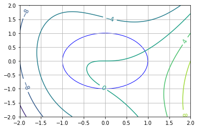
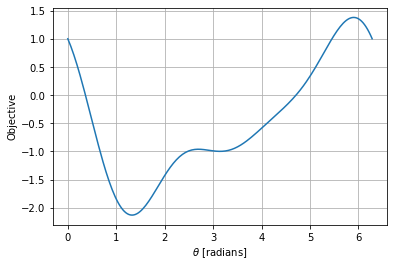

7.8. Inertia-Corrected Netwon Method for Equality Constrained NLPs#
Background:

The Algorithm:


7.8.1. Helper Functions#
# Load required Python libraries.
import matplotlib.pyplot as plt
import numpy as np
from scipy import linalg
## Check is element of array is NaN
def check_nan(A):
return np.sum(np.isnan(A))
## Calculate gradient with central finite difference
## Calculate gradient with central finite difference
def my_grad_approx(x,f,eps1,verbose=False):
'''
Calculate gradient of function f using central difference formula
Inputs:
x - point for which to evaluate gradient
f - function to consider
eps1 - perturbation size
Outputs:
grad - gradient (vector)
'''
n = len(x)
grad = np.zeros(n)
if(verbose):
print("***** my_grad_approx at x = ",x,"*****")
for i in range(0,n):
# Create vector of zeros except eps in position i
e = np.zeros(n)
e[i] = eps1
# Finite difference formula
my_f_plus = f(x + e)
my_f_minus = f(x - e)
# Diagnostics
if(verbose):
print("e[",i,"] = ",e)
print("f(x + e[",i,"]) = ",my_f_plus)
print("f(x - e[",i,"]) = ",my_f_minus)
grad[i] = (my_f_plus - my_f_minus)/(2*eps1)
if(verbose):
print("***** Done. ***** \n")
return grad
def my_jac_approx(x,h,eps1,verbose=False):
'''
Calculate Jacobian of function h(x) using central difference formula
Inputs:
x - point for which to evaluate gradient
h - vector-valued function to consider. h(x): R^n --> R^m
eps1 - perturbation size
Outputs:
A - Jacobian (n x m matrix)
'''
# Check h(x) at x
h_x0 = h(x)
# Extract dimensions
n = len(x)
m = len(h_x0)
# Initialize Jacobian matrix
A = np.zeros((n,m))
# Calculate Jacobian by row
for i in range(0,n):
# Create vector of zeros except eps in position i
e = np.zeros(n)
e[i] = eps1
# Finite difference formula
my_h_plus = h(x + e)
my_h_minus = h(x - e)
# Diagnostics
if(verbose):
print("e[",i,"] = ",e)
print("h(x + e[",i,"]) = ",my_h_plus)
print("h(x - e[",i,"]) = ",my_h_minus)
A[i,:] = (my_h_plus - my_h_minus)/(2*eps1)
if(verbose):
print("***** Done. ***** \n")
return A
## Calculate gradient using central finite difference and my_hes_approx
def my_hes_approx(x,grad,eps2):
'''
Calculate gradient of function my_f using central difference formula and my_grad
Inputs:
x - point for which to evaluate gradient
grad - function to calculate the gradient
eps2 - perturbation size (for Hessian NOT gradient approximation)
Outputs:
H - Hessian (matrix)
'''
n = len(x)
H = np.zeros([n,n])
for i in range(0,n):
# Create vector of zeros except eps in position i
e = np.zeros(n)
e[i] = eps2
# Evaluate gradient twice
grad_plus = grad(x + e)
grad_minus = grad(x - e)
# Notice we are building the Hessian by column (or row)
H[:,i] = (grad_plus - grad_minus)/(2*eps2)
return H
## Linear algebra calculation
def xxT(u):
'''
Calculates u*u.T to circumvent limitation with SciPy
Arguments:
u - numpy 1D array
Returns:
u*u.T
Assume u is a nx1 vector.
Recall: NumPy does not distinguish between row or column vectors
u.dot(u) returns a scalar. This functon returns an nxn matrix.
'''
n = len(u)
A = np.zeros([n,n])
for i in range(0,n):
for j in range(0,n):
A[i,j] = u[i]*u[j]
return A
## Analyze Hessian
def analyze_hes(B):
print(B,"\n")
l = linalg.eigvals(B)
print("Eigenvalues: ",l,"\n")
7.8.2. Algorithm 5.2#
def assemble_check_KKT(W,A,deltaA,deltaW,verbose):
n = np.size(W,0)
if(np.size(W,1) != n):
print("WARNING: W is not square. Somthing is broken.")
rA = np.size(A,0)
m = np.size(A,1)
if(rA != n):
print("WARNING: A does not have the corrent number of rows.")
# Assemble KKT matrix
KKT_top = np.concatenate((W + deltaW*np.eye(n),A),axis=1)
KKT_bot = np.concatenate((A.T,-deltaA*np.eye(m)),axis=1)
KKT = np.concatenate((KKT_top,KKT_bot),axis=0)
# Check inertia of KKT matrix.
# Out of simplicity, we will just calculate the eigenvalues.
# Biegler, 2010 explains a more sophisticates (and computationally efficient)
# strategy
l, eigvec = linalg.eig(KKT)
zero_tol = 1E-12
# Count number of positive eigenvalues
pos_ev = sum(l >= zero_tol)
# Count number of eigenvalues close to zero
zero_ev = sum(np.abs(l) < zero_tol)
# Count number of negative eigenvalues
neg_ev = sum(l <= -zero_tol)
inertia_correct = (n == pos_ev and m == neg_ev)
if(verbose):
print("deltaA = ",deltaA," deltaW = ",deltaW,"intertia =(",pos_ev,",",neg_ev,",",zero_ev,")\n")
return KKT,inertia_correct,pos_ev,neg_ev,zero_ev
def alg52(x0,calc_f,calc_h,eps1=1E-6,eps2=1E-6,max_iter=10,verbose=False):
'''
Basic Full Space Newton Method for Equality Constrained NLP
Input:
x0 - starting point (vector)
calc_f - function to calculate objective (returns scalar)
calc_h - function to calculate constraints (returns vector)
eps1 - tolerance for primal and dual steps
eps2 - tolerance for gradient of L1
Outputs:
x - history of steps (primal variables)
v - history of steps (dual variables)
f - history of objective evaluations
h - history of constraint evaluations
df - history of objective gradients
dL - history of Lagrange function gradients
A - history of constraint Jacobians
W - history of Lagrange Hessians
Notes:
1. For simplicity, central finite difference is used
for all gradient calculations.
'''
### Specifics for Algorithm 5.2
# Tuning parameters
delta_bar_W_min = 1E-20
delta_bar_W_0 = 1E-4
delta_bar_W_max = 1E40
delta_bar_A = 1E-8
kappa_u = 8
kappa_l = 1/3
# Declare iteration histories as empty lists
x = []
v = []
f = []
L = []
h = []
df = []
dL = []
A = []
W = []
# Set for first iteration
delta_A = 0.0
delta_W = 0.0
delta_W_last = 0.0
# Flag for iterations
flag = True
# Iteration counter
k = 0
# Copy initial point to primal variable history
n = len(x0)
x.append(x0)
# Evaluate objective and constraints at initial point
f.append(calc_f(x0))
h.append(calc_h(x0))
# Determine number of equality constraints
m = len(h[0])
# Initial dual variables with vector of ones
v.append(np.ones(m))
# Print header for iteration information
print("Iter. \tf(x) \t\t||h(x)|| \t||grad_L(x)|| \t||dx|| \t\t||dv|| \t\tdelta_A \tdelta_W")
while(flag and k < max_iter):
# STEP 1. Construct KKT matrix
if(k > 0):
# Evaluate objective function
f.append(calc_f(x[k]))
# Evaluate constraint function
h.append(calc_h(x[k]))
# Evaluate objective gradient
df.append(my_grad_approx(x[k],calc_f,1E-6))
# Evaluate constraint Jacobian
A.append(my_jac_approx(x[k],calc_h,1E-6))
# Evaluate gradient of Lagrange function
L_func = lambda x_ : calc_f(x_) + (calc_h(x_)).dot(v[k])
L_grad = lambda x_ : my_grad_approx(x_,L_func,1E-6)
dL.append(L_grad(x[k]))
norm_dL = linalg.norm(dL[k])
# Evaluate Hessian of Lagrange function
W.append(my_hes_approx(x[k],L_grad,1E-6))
if(verbose):
print("*** k =",k," ***")
print("x_k =",x[k])
print("v_k =",v[k])
print("f_k =",f[k])
print("df_k =",df[k])
print("h_k =",h[k])
print("A_k =\n",A[k])
print("W_k =\n",W[k])
print("\n")
######
# Algorithm 5.2: Add intertia correction to Algorithm 5.1
### ALG. 5.2, STEP 1
delta_A = 0
delta_W = 0
KKT,inertia_correct,pos_ev,neg_ev,zero_ev = assemble_check_KKT(W[k],A[k],delta_A,delta_W,verbose)
if not inertia_correct:
### ALG. 5.2, STEP 2
# Assume zero eigenvalue is from rank-deficient Jacobian.
# Set delta_A to non-zero value
if zero_ev != 0:
delta_A = delta_bar_A
### ALG. 5.2, STEP 3
if delta_W_last == 0:
delta_W = delta_bar_W_0
else:
delta_W = max(delta_bar_W_min,kappa_l*delta_W_last)
while (not inertia_correct) and flag:
### ALG. 5.2, STEP 4
KKT,inertia_correct,pos_ev,neg_ev,zero_ev = assemble_check_KKT(W[k],A[k],delta_A,delta_W,verbose)
### ALG. 5.2, STEP 5
if not inertia_correct:
delta_W = kappa_u*delta_W
### ALG. 5.2, STEP 6
if delta_W > delta_bar_W_max:
flag = False
print("Abort step computation. KKT matrix is severely ill-conditioned.")
delta_W_last = delta_W
## STEP 2. Solve linear system.
if flag:
b = -np.concatenate((dL[k],h[k]),axis=0)
z = linalg.solve(KKT,b)
else:
z = []
## STEP 3. Take step
if flag:
dx = z[0:n]
dv = z[n:(n+m+1)]
x.append(x[k] + dx)
v.append(v[k] + dv)
norm_dx = linalg.norm(dx)
norm_dv = linalg.norm(dv)
## Print iteration information
print(k,' \t{0: 1.4e} \t{1:1.4e} \t{2:1.4e}'.format(f[k],linalg.norm(h[k]),norm_dL),end='')
if flag:
print(' \t{0: 1.4e} \t{1: 1.4e}'.format(norm_dx,norm_dv),end='')
else:
print(' \t ------- \t -------',end='')
print(' \t{0: 1.4e} \t{1: 1.4e}'.format(delta_A,delta_W),end='\n')
# Increment counter
k = k + 1
## Check convergence criteria
if(flag):
flag = norm_dx > eps1 and norm_dv > eps1 and norm_dL > eps2
if(not flag and k > max_iter):
print("Reached maximum number of iterations.")
return x,v,f,h,df,dL,A,W
7.8.3. Example Problem 2#
(Where is Example Problem 1? We are using the same number scheme as the previous notebook.)
Consider: $\(\begin{align}\min_x \quad & x_1^2 + 2 x_2^2 \\ \mathrm{s.t.} \quad & x_1 + x_2 = 1 \\ & x_1 + x_2 = 1 \end{align}\)$
7.8.3.1. Test Algorithm 5.2 with redundant constraints.#
## Define functions
def my_f2(x):
return x[0]**2 + 2*x[1]**2
def my_h2(x):
h = np.zeros(2)
h[0] = x[0] + x[1] - 1
h[1] = h[0]
return h
## Declare initial point
x0 = np.array((1,1))
## Run Algorithm 5.2 on test problem
results = alg52(x0,my_f2,my_h2,verbose=False)
## Display results
xstar = results[0][-1]
print("\nx* =",xstar)
## Display results
vstar = results[1][-1]
print("\nv* =",vstar)
Iter. f(x) ||h(x)|| ||grad_L(x)|| ||dx|| ||dv|| delta_A delta_W
0 3.0000e+00 1.4142e+00 7.2111e+00 7.4537e-01 2.3571e+00 1.0000e-08 1.0000e-04
1 6.6667e-01 2.3373e-08 2.9368e-04 5.4908e-05 9.4088e-05 1.0000e-08 3.3333e-05
2 6.6667e-01 9.4991e-13 3.7259e-09 1.1908e-09 6.4780e-11 1.0000e-08 1.1111e-05
x* = [0.66666667 0.33333333]
v* = [-0.66666666 -0.66666667]
7.8.3.2. Test Algorithm 5.2 without redundant constraints.#
## Define functions
def my_h2b(x):
return (x[0] + x[1] - 1)*np.ones(1)
## Run Algorithm 5.2 on test problem
results = alg52(x0,my_f2,my_h2b,verbose=False)
## Display results
xstar = results[0][-1]
print("\nx* =",xstar)
## Display results
vstar = results[1][-1]
print("\nv* =",vstar)
Iter. f(x) ||h(x)|| ||grad_L(x)|| ||dx|| ||dv|| delta_A delta_W
0 3.0000e+00 1.0000e+00 5.8310e+00 7.4537e-01 2.3335e+00 0.0000e+00 0.0000e+00
1 6.6667e-01 1.3978e-10 2.9473e-04 4.5326e-05 1.5285e-04 0.0000e+00 0.0000e+00
2 6.6667e-01 0.0000e+00 4.5431e-09 1.4393e-09 2.0170e-09 0.0000e+00 0.0000e+00
x* = [0.66666667 0.33333333]
v* = [-1.33333333]
7.8.3.3. Discussion#
Compare the multipliers with and without the redundant constraint.
7.8.4. Example Problem 3#
Let us try a model where \(\nabla h(x^k)^T\) is full rank but there are multiple local optima.
Consider: $\(\begin{align}\min_x \quad & x_1^3 - x_2 -x_1 x_2 - x_2^2 \\ \mathrm{s.t.} \quad & x_1^2 + x_2^2 = 1 \end{align}\)$
## Copied from notebook with Algorithm 5.1
def my_f3(x):
return x[0]**3 - x[1] - x[0]*x[1] - x[1]**2
def my_h3(x):
return (x[0]**2 + x[1]**2 - 1)*np.ones(1)
def visualize(xk=[]):
n1 = 101
n2 = 101
x1eval = np.linspace(-2,2,n1)
x2eval = np.linspace(-2,2,n2)
X, Y = np.meshgrid(x1eval, x2eval)
Z = np.zeros([n2,n1])
for i in range(0,n1):
for j in range(0,n2):
Z[j,i] = my_f3((X[j,i], Y[j,i]))
fig, ax = plt.subplots(1,1)
CS = ax.contour(X, Y, Z)
ax.clabel(CS, inline=1, fontsize=12)
# Add grid
plt.grid()
# Add unit circle
circ = plt.Circle((0, 0), radius=1, edgecolor='b', facecolor='None')
ax.add_patch(circ)
# Plot iteration history
if len(xk) > 0:
for i in range(0,len(xk)):
if i == len(xk) - 1:
c = "red"
else:
c = "black"
plt.scatter((xk[i][0]),(xk[i][1]),marker='o',color=c)
plt.xlim([-2,2])
plt.ylim([-2,2])
visualize()
nt = 200
theta = np.linspace(0,2*np.pi,nt)
obj = np.zeros(nt)
for i in range(0,nt):
x_ = np.cos(theta[i])
y_ = np.sin(theta[i])
obj[i] = my_f3((x_,y_))
plt.figure()
plt.plot(theta,obj)
plt.xlabel('$\\theta$ [radians]')
plt.ylabel('Objective')
plt.grid()


7.8.4.1. Starting Point Near Global Min (\(\theta_0 = 1.0\))#
theta0 = 1.0
x0 = np.array((np.sin(theta0),np.cos(theta0)))
## Run Algorithm 5.1 on test problem
results = alg52(x0,my_f3,my_h3)
## Display results
xstar = results[0][-1]
print("\nx* =",xstar)
## Display results
vstar = results[1][-1]
print("\nv* =",vstar)
## Convert into theta
print("\ntheta* =",np.arccos(xstar[0]),"=",np.arcsin(xstar[1]))
## Visualize
visualize(results[0])
Iter. f(x) ||h(x)|| ||grad_L(x)|| ||dx|| ||dv|| delta_A delta_W
0 -6.9105e-01 0.0000e+00 3.7501e+00 1.1171e+00 1.1455e+00 0.0000e+00 0.0000e+00
1 -4.0104e+00 1.2480e+00 2.1729e+00 4.2318e-01 3.9672e-01 0.0000e+00 0.0000e+00
2 -2.4216e+00 1.7908e-01 3.3575e-01 8.3649e-02 1.0205e-01 0.0000e+00 0.0000e+00
3 -2.1438e+00 6.9971e-03 1.7074e-02 3.5294e-03 6.5710e-03 0.0000e+00 0.0000e+00
4 -2.1324e+00 1.2457e-05 4.6327e-05 6.3597e-06 1.9707e-05 0.0000e+00 0.0000e+00
5 -2.1323e+00 4.0446e-11 1.4043e-09 2.8044e-10 3.3891e-11 0.0000e+00 0.0000e+00
x* = [0.24215301 0.97023807]
v* = [1.64012795]
theta* = 1.326212035697004 = 1.3262120356970035
7.8.4.2. Starting Point Near Local Min (\(\theta_0 = \pi\))#
theta0 = np.pi
x0 = np.array((np.sin(theta0),np.cos(theta0)))
## Run Algorithm 5.1 on test problem
results = alg52(x0,my_f3,my_h3)
## Display results
xstar = results[0][-1]
print("\nx* =",xstar)
## Display results
vstar = results[1][-1]
print("\nv* =",vstar)
## Convert into theta
print("\ntheta* =",np.arccos(xstar[0]),"(using arccos)")
print("\ntheta* =",np.arcsin(xstar[1]),"(using arcsin)")
## Visualize
visualize(results[0])
Iter. f(x) ||h(x)|| ||grad_L(x)|| ||dx|| ||dv|| delta_A delta_W
0 2.2204e-16 0.0000e+00 1.4142e+00 5.0002e-01 2.4998e-01 0.0000e+00 0.0000e+00
1 -6.2504e-01 2.5002e-01 1.0000e+00 3.0322e-01 4.1490e-01 0.0000e+00 3.2768e+00
2 -7.1455e-01 9.1941e-02 8.2867e-01 6.9738e+00 3.9656e+00 0.0000e+00 0.0000e+00
3 -1.9540e+02 4.8634e+01 5.3609e+01 7.3453e+00 8.9486e+00 0.0000e+00 3.2768e+00
4 -6.6453e+01 5.3954e+01 7.3649e+01 3.6845e+00 4.7204e+00 0.0000e+00 8.7381e+00
5 -2.0079e+01 1.3575e+01 2.6604e+00 1.7791e+00 2.6030e-01 0.0000e+00 0.0000e+00
6 -6.7442e+00 3.1651e+00 9.2895e-01 7.7547e-01 2.3764e-01 0.0000e+00 0.0000e+00
7 -3.0811e+00 6.0135e-01 3.5585e-01 2.3833e-01 1.8564e-01 0.0000e+00 0.0000e+00
8 -2.2251e+00 5.6802e-02 8.3998e-02 2.7726e-02 5.2689e-02 0.0000e+00 0.0000e+00
9 -2.1336e+00 7.6871e-04 2.8474e-03 3.8422e-04 1.6169e-03 0.0000e+00 0.0000e+00
x* = [0.24215303 0.97023814]
v* = [1.64012726]
theta* = 1.3262120118414 (using arccos)
theta* = 1.3262123260037786 (using arcsin)
7.8.4.3. Starting Point Near Global Max (\(\theta_0 = 5.5\))#
theta0 = 5.5
x0 = np.array((np.sin(theta0),np.cos(theta0)))
## Run Algorithm 5.1 on test problem
results = alg52(x0,my_f3,my_h3)
## Display results
xstar = results[0][-1]
print("\nx* =",xstar)
## Display results
vstar = results[1][-1]
print("\nv* =",vstar)
## Convert into theta
print("\ntheta* =",np.arccos(xstar[0]),"(using arccos)")
print("\ntheta* =",np.arcsin(xstar[1]),"(using arcsin)")
## Visualize
visualize(results[0])
Iter. f(x) ||h(x)|| ||grad_L(x)|| ||dx|| ||dv|| delta_A delta_W
0 -1.0621e+00 0.0000e+00 6.9215e-01 5.6411e-01 4.3032e-01 0.0000e+00 3.2768e+00
1 -2.0216e+00 3.1822e-01 2.0226e+00 2.3706e-01 1.1375e+00 0.0000e+00 8.7381e+00
2 -1.9886e+00 5.6197e-02 1.3940e+00 4.4244e-01 4.9825e-02 0.0000e+00 0.0000e+00
3 -2.4244e+00 1.9575e-01 5.4298e-01 1.2207e-01 1.5280e-02 0.0000e+00 0.0000e+00
4 -2.1566e+00 1.4900e-02 3.8186e-02 1.0366e-02 1.9242e-03 0.0000e+00 0.0000e+00
5 -2.1325e+00 1.0745e-04 2.7129e-04 7.4929e-05 1.7543e-05 0.0000e+00 0.0000e+00
6 -2.1323e+00 5.6144e-09 3.7221e-09 2.8396e-09 2.9955e-09 0.0000e+00 0.0000e+00
x* = [0.24215301 0.97023807]
v* = [1.64012795]
theta* = 1.3262120357119471 (using arccos)
theta* = 1.3262120357119473 (using arcsin)